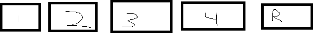

To understand what a stack overflow is, let's use a restaurant analogy.
There are 5 tables at a restaurant, where 1 of the tables is reserved.
The tables look like this:
Let's say that there are 5 people who want to eat at this restaurant, but none of them are on the reserved list.
There are only 4 available tables for 5 people, so how do we fix this?
We can easily solve the problem by filling up the 4 public tables and giving the reserved table to the 5th person.
Now, the person at the reserved table is now the 5th person.
We can relate this to a computer program by visualizing a buffer, or a set of tables, with a secret variable being the reserved table.
If we overflow the buffer, with something larger than it, we will be able to change the special variable, like how we put the 5th person in the reserved table.